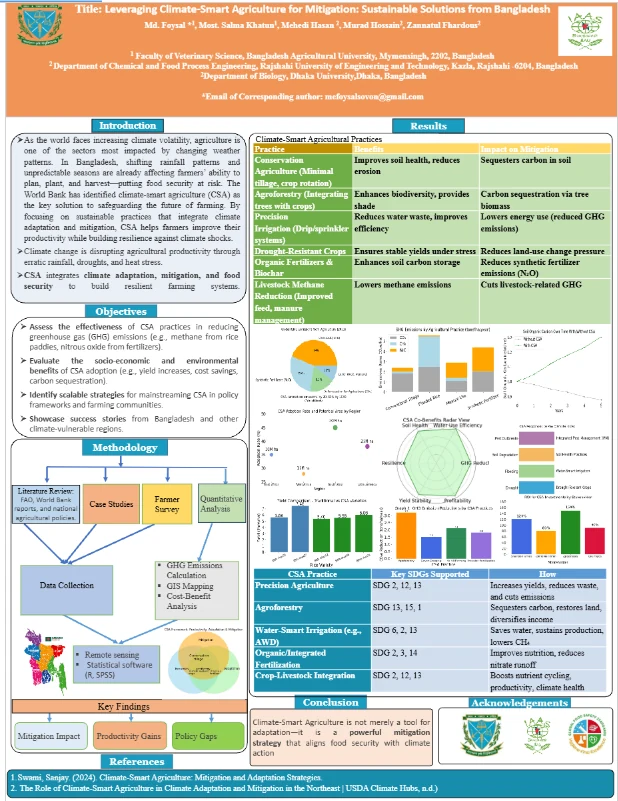

⌁
IoT irrigation
Sensor-integrated water control and operational visibility.
Track-specific research and evidence
My agricultural research interests grow from collaborative smart-irrigation and climate-smart agriculture work, supported by transferable industrial sensing and automation experience. I do not present my factory projects as completed agricultural field trials.
Research focus
Sensor-integrated water control and operational visibility.
Transparent indicators for water-use and agricultural decisions.
Transferable sensor/actuator integration from industrial engineering.
Research method
Define agricultural constraints and baseline practice
Select suitable water/soil/environmental sensors
Prototype and log automated decisions
Design controlled field validation rather than claim it prematurely
Future direction
Which low-cost sensors can support robust irrigation decisions in field conditions?
How can irrigation-control policies be evaluated against observed water-use and plant response?
What practical maintenance and usability conditions determine whether sensor systems persist on small farms?
Academic evidence
Status labels distinguish accepted conference work, thesis, drafts, posters and industrial case studies.

Collaborative poster on irrigation sensing and water-efficiency opportunities. Not represented as a peer-reviewed journal article.
My role: Collaborative contributor

Related agriculture and adaptation discussion; no field-trial outcomes stated.
My role: Collaborative contributor